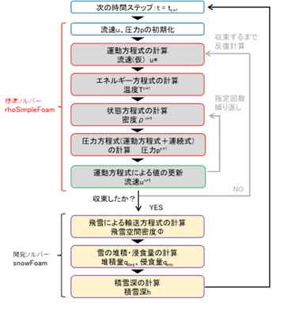
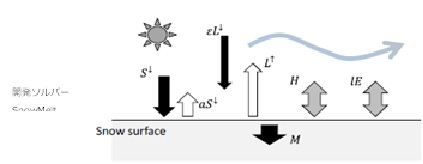

2.2 開発したカスタマイズソルバーの解説
(1) ソルバーの開発について
風雪・融雪シミュレーションは、新潟工科大学富永教授が開発した3次元気流解析に基づく雪の浸食・堆積と雪面熱収支に基づく融雪の推定モデルを表現できるようにOpenFOAMの標準ソルバーを基にカスタマイズを行っています。
風雪シミュレーションでは、非定常の圧縮性乱流解析ソルバーrhoPimpleFoamにより気流解析を行い、雪粒子の移動形態である浮遊、雪の堆積・浸食による積雪深さをを計算するため、rhoPimpleFoamをカスタマイズしたソルバー「snowFOAM」を用いて計算します。
融雪シミュレーションでは、風雪シミュレーションで求めた雪面の積雪深分布に対し、雪面上の熱収支（全天日射量、大気放射量、顕熱輸送量、潜熱輸送量等）の計算を行うため、凍結した流れ場での熱輸送解析ソルバーthermoFoamをカスタマイズした「snowMelt」を用いて計算します。

図 風雪シミュレーションの計算フロー

図 積雪面における熱収支
（参考文献）
富永，大風，持田，志田，吉野, 雪面の侵食・堆積のモデル化に関する基礎的検討, 日本建築学会環境系論文集, 第 74 巻 2009
青木，富永，村田，住宅配置形態と積雪分布に関する CFD・熱収支解析，日本建築学会構造論文集，第 75 巻，第 647 号，2010